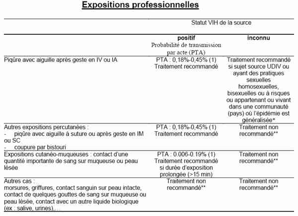

Bienvenue Sur Medical Education
Accident d'exposition au sang/sexe
Spécialité : infectieux /
Points importants
-
Définition : contact avec du sang comportant soit une effraction cutanée (piqûre ou coupure) soit une projection sur une muqueuse (oeil, bouche) ou sur une peau lésée
-
Risque : transmission d'agents infectieux (bactéries, virus, parasites et champignons, surtout VHB, VHC et VIH), du fait de leur prévalence, de l'existence d'une virémie chronique et de la gravité de l'infection engendrée
-
Incidence du risque professionnel = 7,6 pour 100 lits d'hospitalisation pour les infirmiers, 2,2% pour les médecins
-
Probabilité de séroconversion : 0,3% pour le VIH, 0,3-2% pour le VHC
-
Le statut sérologique du patient source est inconnu dans plus de 25% des cas
-
Près d'un AES sur 2 est déclaré par le personnel infirmier, beaucoup moins par le personnel médical
-
L'injection est le geste le plus fréquemment en cause
-
La moitié des AES sont évitables si application des précautions standards
-
Le traitement antirétroviral doit être débuté le plus précocement possible
Présentation clinique / CIMU
CONTEXTE
Présentation clinique / CIMU
CONTEXTE
Type d'exposition
-
Exposition professionnelle :
- plaie cutanée (piqûre ou coupure)
- contact d'une muqueuse ou d'une peau lésée avec du sang ou autre fluide potentiellement contaminant (sperme ; sécrétions vaginales ; LCR ; synovie ; liquide pleural, péricardique, amniotique ; morsure ; virus en laboratoire)
-
Exposition non professionnelle :
- rapport sexuel non protégé ou rupture de préservatif
- viol
- échange de seringue
- morsure
- piqûre avec seringue abandonnée
NB - fluides non contaminants (sauf si contenant du sang)
- Fèces, urine, sécrétion nasale, salive, sueurs, larmes, vomi
Statut sérologique du patient source
- VIH, Hépatite B et Hépatite C
Délai depuis l'AES
Facteurs de risque
- La blessure est profonde
- La virémie du patient source est élevée
- L'aiguille est utilisée pour un geste intraveineux ou intra-artériel
- L'aiguille est visiblement souillée
- L'aiguille est de gros calibre
Personnes sources à risque
- Usagers de drogue intraveineuse
- Homme homo ou bisexuel
- Partenaires sexuels multiples
- Personne originaire d'un pays à forte prévalence d'infection VIH
Antécédents
- Grossesse en cours (contre-indication au traitement)
CIMU
-
Tri 3, appel immédiat du médecin coordonnateur pour débuter un éventuel traitement prophylactique
Signes paracliniques
BIOLOGIQUE
Pas de bilan aux urgences
Pour les professionnels
-
Si le patient source est VIH+ :
- NFS, Bilan hépatique et rénal, amylase, lipase, sérologie VIH et VHC, bêta-HCG
-
Si le patient source est VHC+ :
-
transaminases, sérologie VIH et VHC
-
transaminases, sérologie VIH et VHC
Traitement
TRAITEMENT INTRAHOSPITALIER
AES professionnels
-
Pendant les heures d'ouverture, pas de traitement aux urgences mais orientation du patient vers :
- le CIDAG si le patient source est inconnu ou VIH+
- la médecine du travail si le patient source est VIH-
- En dehors des heures d'ouverture du CIDAG ou en cas d'absence de CIDAG, les antirétroviraux sont prescrits aux urgences
-
Conseils lors d'un appel d'une victime d'AES :
- après piqûre ou blessure cutanée, nettoyer immédiatement la plaie à l'eau courante et au savon, rincer, puis antisepsie par soluté de Dakin avec un temps de contact > 5 minutes
- après projection sur les muqueuses, rincer abondamment de préférence au sérum physiologique ou sinon à l'eau au moins 5 minutes
- demander à faire prélever le patient source immédiatement et avec son accord (sauf patient dans le coma ou dément, ou sérologie VIH < 1 semaine) : test dépistage rapide VIH, sérologies VHB et VHC , tubes à adresser au laboratoire après appel avec la mention « AES-URGENT »
-
Sujet source VIH- :
- l'agent exposé ne doit pas être inscrit aux urgences
- il doit contacter la médecine du travail dans les 3 jours pour programmer un suivi sérologique
-
Sujet source VIH+ ou sérologie inconnue :
-
déclarer l'accident de travail à l'infirmerie dans les 24 heures
- indications de traitement post-exposition : cf. tableau 1 : AES Expositions professionnelles
-
déclarer l'accident de travail à l'infirmerie dans les 24 heures
 _2 Tableau AES : Expositions professionnelles
AES « sexuels »
- Les AES « sexuels » sont orientés, quel que soit leur statut viral, vers le CIDAG qu'ils aient eu ou non une prise en charge initiale aux urgences
-
Indications de traitement post-exposition :
- surtout rapport non protégé, rupture de préservatif : cf. tableau : AES Expositions sexuelles
_3 Tableau AES : Expositions sexuelles
-
Cas particulier : le viol
-
traitement post-exposition en urgence
- si la patiente souhaite porter plainte : appeler les Urgences Médico Judiciaires (préserver tout indice, linge souillé, etc)
- si la patiente ne souhaite pas porter plainte : poursuite de la prise en charge au CIDAG
- envisager consultation en gynécologie
-
traitement post-exposition en urgence
Dans tous les cas
- Le traitement est à instituer au mieux dans les 4 premières heures après l'incident (pas de prescription après 48 h ; demander alors avis du CiDAG)
- Prendre éventuellement avis auprès d'un infectiologue en cas de situation complexe (Grossesse, risques d'interaction médicamenteuse: contraceptifs oraux, antimigraineux, antiépileptiques, antivitamine K, benzodiazépines, traitement de substitution..., contre-indication au Combivir ou au Kaletra), patient source sous traitement anti rétroviral
- Proposer Gammaglobulines anti-HBS 500 U/mL, si patient non-vacciné ou doute sur statut vaccinal
- Prévoir la vaccination anti-hépatite B
- Vérifier la vaccination antitétanique
Indications de traitement post-exposition
- Tableau : AES Exposition par partage de matériel d'injection
_621 Tableau AES : Exposition par partage de matériel d'injection
- Tableau : AES Autres expositions
_622 Tableau AES : Autres expositions
TRAITEMENT MEDICAMENTEUX
-
Trithérapie à prescrire pour les 4 premiers jours (si indiqué). Sera poursuivie par le CIDAG pour 1 mois
- Truvada® : 1 cp le matin en milieu de repas
- Kaletra® (lopinavir - ritonavir) 200 mg / 50 mg : 2-0-2 en milieu de repas à heures fixes et à 12 heures d'intervalle (contre-indications : insuffisance hépatocellulaire, allergie au médicament)
- Si la première dose se fait la nuit, la seconde aura lieu le matin (dose de charge)
-
MAIS si traitement connu de la personne source VIH+, prescrire le même traitement à la personne exposée
Devenir / orientation
-
Pour AES professionnel :
-
adresser au CIDAG dans les 72 heures pour la suite de prise en charge
ORDONNANCE DE SORTIE
-
Traitement antirétroviral pour 5 jours
-
Certificat Médical Initial à établir avec mise en soins pour une durée de 6 mois et mentionner la nécessité du suivi sérologique pour cette durée
RECOMMANDATIONS DE SORTIE
-
Informer le patient de reprendre un médicament vomi dans les 30 min
-
Prendre les médicaments à heure fixe. Ne jamais interrompre le traitement pendant les 28 jours
-
Les patients ne restant pas à Paris doivent appeler SIDA info service au 0 800 840 800, pour se faire indiquer où être suivi
-
Informer des effets indésirables (nausées, vomissements, diarrhée, asthénie, éruption cutanée, douleurs musculaires, vertiges, étourdissements, insomnies, rêves anormaux )
-
Conseils de protection vis à vis des partenaires sexuels des sujets exposés
-
Adresser le patient vers la médecine du travail dans tous les cas
Bibliographie
-
Circulaire DGS / DHOS / DRT / DSS n° 2003/165 du 2 avril 2003 relative à la mise en Œuvre d'un traitement antirétroviral après un AES
- adresser au CIDAG dans les 72 heures pour la suite de prise en charge
Bibliographie
-
Circulaire DGS / DHOS / DRT / DSS n° 2003/165 du 2 avril 2003 relative à la mise en Œuvre d'un traitement antirétroviral après un AES
Auteur(s) : Jean-Christophe BOULARD, Ariane DAVOUT